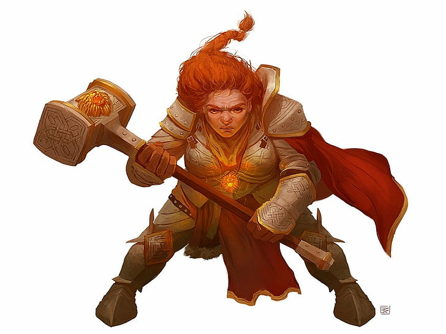

This page will describe what this website is about.
Mostly its about le
And apparently also about pasting images of dwarves:

If you’re into “web typography,” you’ll also find yourself using curly quotes quite a bit.
If you're into "web typography", you'll also find yourself using curly quotes quite a bit.